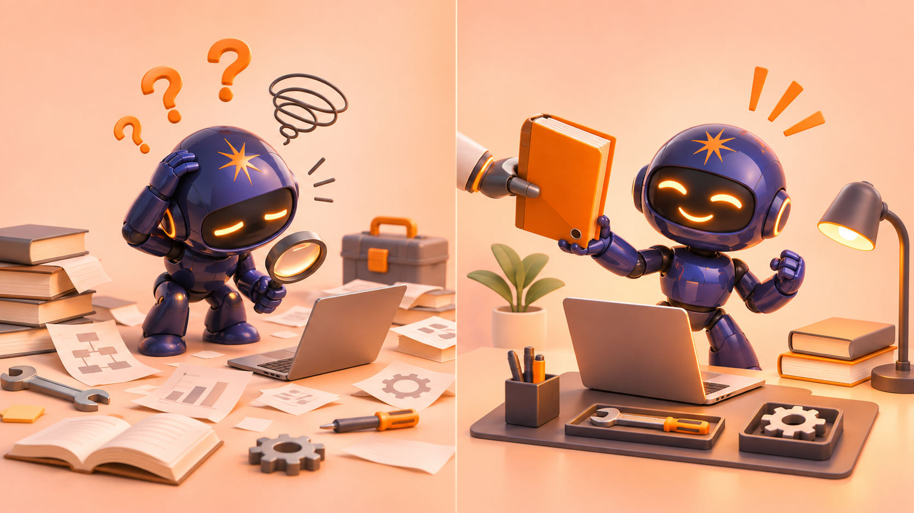
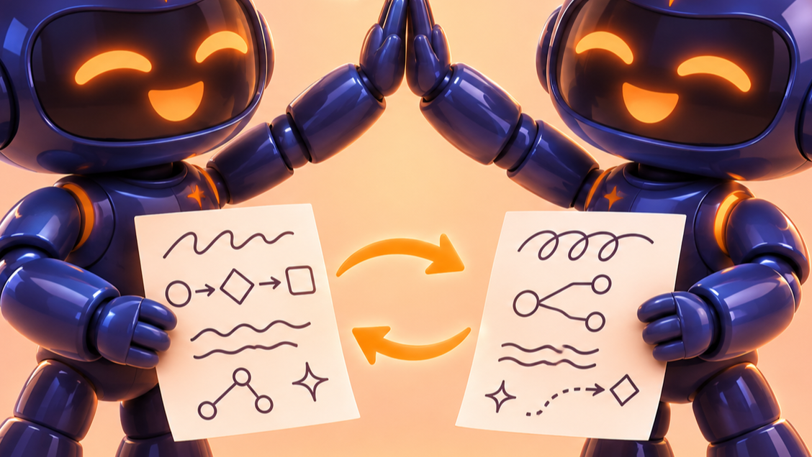

AIを使う人が増え、共有や教える場面が増えました。
そのときの質を上げる話です。
できたあとに「AIは何を使って、どうやったの？」と聞かれて、答えられますか？
同じ「〇〇やって」でも、AIや日や環境が違うと、
選ぶ手段が変わります。

渡したのはプロンプトではなく、使うものと手順と、できることを書いたファイルです。
ABC：できると分かっている
DE：やったことがないので、先に調査して
「あなたはこれをどうやって動かしているの？」
「他に精度を上げる方法はない？」
「〇〇を出力するのは、何を使って何をしたの？」→ 答えをメモにして、一緒に渡す

みんなが教える側に回るフェーズです。何が何をしているかを知っているだけで、共有の質が上がります。